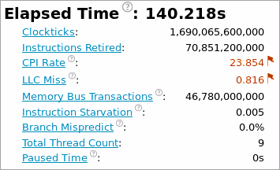
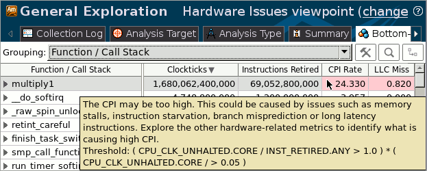

When the application exits, the
Intel® VTune™ Amplifier
finalizes the results and opens the Hardware Issues viewpoint. To interpret the
collected data and understand where you should focus your tuning efforts for
the specific hardware, do the following:
When the application exits, the
Intel® VTune™ Amplifier
finalizes the results and opens the Hardware Issues viewpoint. To interpret the
collected data and understand where you should focus your tuning efforts for
the specific hardware, do the following:
Note
For a detailed tuning methodology based on the events and metrics in General Exploration, visit https://software.intel.com/en-us/articles/processor-specific-performance-analysis-papers.
The screenshots and execution time data provided in this tutorial are created on a system with 4 CPU cores, based on the Intel microarchitecture code name Merom. Your data may vary depending on the number and type of CPU cores on your system.
The screenshots and execution time data provided in this tutorial are created for a sample code compiled with Intel® C++ Compiler. Your data may vary depending on the compiler you use.
Understand the Event-based Metrics
Click the Summary tab to explore the data provided in the Summary window for the whole application performance:
The
Elapsed time metric shows the wall time from the beginning to
the end of the collection. Treat this metric as your basic performance
baseline against which you will compare subsequent runs of the
application. The goal of your optimization is to reduce the value of this
metric. All other metrics in this section are hardware event ratios provided by
Intel architects. Mouse over the
 icon to see the metric
description and formula used for the metric calculation. VTune Amplifier
highlights metrics values that exceed the threshold set for the corresponding
metric. Such a value highlighted in pink signifies an application-level
hardware issue. The text below a metric with the detected hardware issue
describes the issue, potential cause and recommendations on the next steps, and
displays a threshold formula used for calculation. Mouse over the truncated
text to read a full description.
icon to see the metric
description and formula used for the metric calculation. VTune Amplifier
highlights metrics values that exceed the threshold set for the corresponding
metric. Such a value highlighted in pink signifies an application-level
hardware issue. The text below a metric with the detected hardware issue
describes the issue, potential cause and recommendations on the next steps, and
displays a threshold formula used for calculation. Mouse over the truncated
text to read a full description.
Quick look at the summary results discovers that the matrix application has the following issues:
CPI (Clockticks per Instructions Retired) Rate
LLC Miss
Identify the Hardware Issues
Click the Bottom-up tab to open the Bottom-up window and see how each program unit performs against the event-based metrics. Each row represents a program unit and percentage of the CPU cycles used by this unit. Program units that take more than 5% of the CPU time are considered hotspots. This means that by resolving a hardware issue that, for example, took about 20% of the CPU cycles, you can obtain 20% optimization for the hotspot.
By default, the VTune Amplifier sorts data in the descending order by Clockticks and provides the hotspots at the top of the list. The metric values for event ratios show up as numbers and/or bars. To change the data format, right-click a column and select Show Data As > format.
You see that the multiply1 function is the most obvious hotspot in the matrix application. It has the highest event count (Clockticks and Instructions Retired events) and most of the hardware issues were also detected during execution of this function.
Note
Mouse over a column header with an event-based metric name to see the metric description. Mouse over a highlighted cell to read the description of the hardware issue detected for the program unit.
For the multiply1 function, the VTune Amplifier highlights the same issues that were detected as the issues affecting the performance of the whole application:
CPI Rate is high (>1). Potential causes are memory stalls, instruction starvation, branch misprediction, or long-latency instruction. To define the cause for your code, explore other metrics in the Bottom-up window.
LLC miss metric shows that about 81.6% (0.816) of CPU cycles were spent waiting for LLC load misses to be serviced. Possible optimizations are to reduce data working set size, improve data access locality, blocking and consuming data in chunks that fit in the LLC, or better exploit hardware prefetchers. Consider using software prefetchers but beware that they can increase latency by interfering with normal loads and can increase pressure on the memory system.
Key Terms
Next Step
Optimization Notice |
|---|
Intel's compilers may or may not optimize to the same degree for non-Intel microprocessors for optimizations that are not unique to Intel microprocessors. These optimizations include SSE2, SSE3, and SSSE3 instruction sets and other optimizations. Intel does not guarantee the availability, functionality, or effectiveness of any optimization on microprocessors not manufactured by Intel. Microprocessor-dependent optimizations in this product are intended for use with Intel microprocessors. Certain optimizations not specific to Intel microarchitecture are reserved for Intel microprocessors. Please refer to the applicable product User and Reference Guides for more information regarding the specific instruction sets covered by this notice. Notice revision #20110804 |